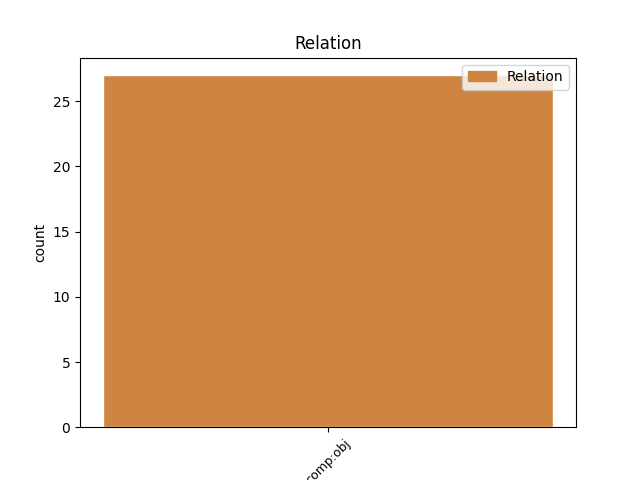
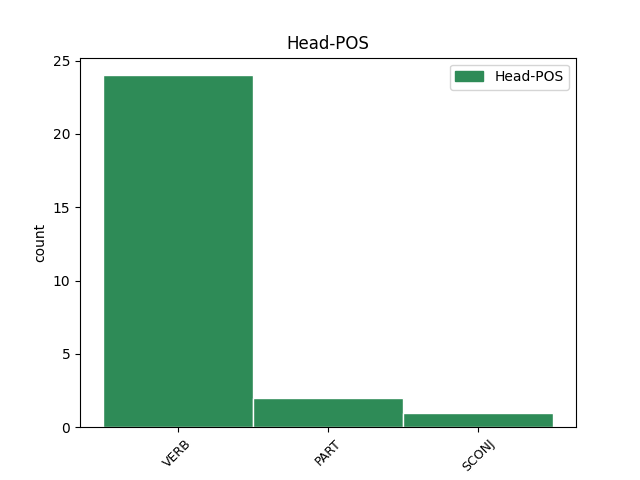
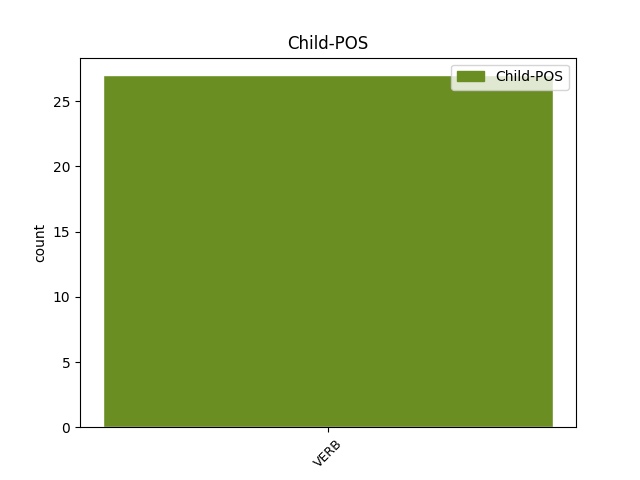

Distribution of features within this leaf



Agreement Rules sorted by frequency.
- When the dependent token is the direct object complements(comp:obj) of the head token, and the head token is VERB and the dependent token is VERB.
1 ' _ _ _ _ 0 _ _ _
2 Bhí bí VERB PastInd Form=Len|Mood=Ind|Tense=Past 7 comp:obj _ _
3 sé _ _ _ _ 0 _ _ _
4 pósta _ _ _ _ 0 _ _ _
5 , _ _ _ _ 0 _ _ _
6 ' _ _ _ _ 0 _ _ _
7 arsa arsa VERB PastInd Mood=Ind|Tense=Past 0 _ _ _
8 Tammaí _ _ _ _ 0 _ _ _
9 , _ _ _ _ 0 _ _ _
10 ' _ _ _ _ 0 _ _ _
11 agus _ _ _ _ 0 _ _ _
12 seisear _ _ _ _ 0 _ _ _
13 nó _ _ _ _ 0 _ _ _
14 seachtar _ _ _ _ 0 _ _ _
15 clainne _ _ _ _ 0 _ _ _
16 air _ _ _ _ 0 _ _ _
17 . _ _ _ _ 0 _ _ _
1 Bhí _ _ _ _ 0 _ _ _
2 fearg _ _ _ _ 0 _ _ _
3 orm _ _ _ _ 0 _ _ _
4 nár _ _ _ _ 0 _ _ _
5 bacadh _ _ _ _ 0 _ _ _
6 liom _ _ _ _ 0 _ _ _
7 - _ _ _ _ 0 _ _ _
8 nár nár PART Vb PartType=Cmpl|Tense=Past 0 _ _ _
9 fiafraíodh fiafraigh VERB VTI Mood=Ind|Tense=Past|Voice=Auto 8 comp:obj _ _
10 scéala _ _ _ _ 0 _ _ _
11 díom _ _ _ _ 0 _ _ _
12 - _ _ _ _ 0 _ _ _
13 nár _ _ _ _ 0 _ _ _
14 cuireadh _ _ _ _ 0 _ _ _
15 ceist _ _ _ _ 0 _ _ _
16 orm _ _ _ _ 0 _ _ _
17 i _ _ _ _ 0 _ _ _
18 dtaobh _ _ _ _ 0 _ _ _
19 na _ _ _ _ 0 _ _ _
20 timpiste _ _ _ _ 0 _ _ _
21 a _ _ _ _ 0 _ _ _
22 d' _ _ _ _ 0 _ _ _
23 éirigh _ _ _ _ 0 _ _ _
24 dom _ _ _ _ 0 _ _ _
25 ; _ _ _ _ 0 _ _ _
26 ach _ _ _ _ 0 _ _ _
27 nuair _ _ _ _ 0 _ _ _
28 a _ _ _ _ 0 _ _ _
29 dhearc _ _ _ _ 0 _ _ _
30 ógbhean _ _ _ _ 0 _ _ _
31 dheas _ _ _ _ 0 _ _ _
32 a _ _ _ _ 0 _ _ _
33 bhí _ _ _ _ 0 _ _ _
34 ag _ _ _ _ 0 _ _ _
35 dul _ _ _ _ 0 _ _ _
36 thart _ _ _ _ 0 _ _ _
37 go _ _ _ _ 0 _ _ _
38 truamhéileach _ _ _ _ 0 _ _ _
39 orm _ _ _ _ 0 _ _ _
40 , _ _ _ _ 0 _ _ _
41 agus _ _ _ _ 0 _ _ _
42 í _ _ _ _ 0 _ _ _
43 ar _ _ _ _ 0 _ _ _
44 tí _ _ _ _ 0 _ _ _
45 labharta _ _ _ _ 0 _ _ _
46 , _ _ _ _ 0 _ _ _
47 tháinig _ _ _ _ 0 _ _ _
48 cuthach _ _ _ _ 0 _ _ _
49 orm _ _ _ _ 0 _ _ _
50 . _ _ _ _ 0 _ _ _
1 an _ _ _ _ 0 _ _ _
2 Dúin _ _ _ _ 0 _ _ _
3 , _ _ _ _ 0 _ _ _
4 an _ _ _ _ 0 _ _ _
5 oíche _ _ _ _ 0 _ _ _
6 sin _ _ _ _ 0 _ _ _
7 sular sula SCONJ Subord Tense=Past 0 _ _ _
8 seoladh seol VERB VTI Mood=Ind|Tense=Past|Voice=Auto 7 comp:obj _ _
9 an _ _ _ _ 0 _ _ _
10 Deilbhpháipéar _ _ _ _ 0 _ _ _
11 . _ _ _ _ 0 _ _ _
Disagree Examples:
1 Mar _ _ _ _ 0 _ _ _
2 is _ _ _ _ 0 _ _ _
3 léir _ _ _ _ 0 _ _ _
4 , _ _ _ _ 0 _ _ _
5 eisíodh _ _ _ _ 0 _ _ _
6 roinnt _ _ _ _ 0 _ _ _
7 mhaith _ _ _ _ 0 _ _ _
8 CallCards _ _ _ _ 0 _ _ _
9 ó _ _ _ _ 0 _ _ _
10 foilsíodh _ _ _ _ 0 _ _ _
11 an _ _ _ _ 0 _ _ _
12 bróisiúr _ _ _ _ 0 _ _ _
13 deireanach _ _ _ _ 0 _ _ _
14 do _ _ _ _ 0 _ _ _
15 Chlub _ _ _ _ 0 _ _ _
16 Bailitheoirí _ _ _ _ 0 _ _ _
17 CallCard _ _ _ _ 0 _ _ _
18 , _ _ _ _ 0 _ _ _
19 ina _ _ _ _ 0 _ _ _
20 measc _ _ _ _ 0 _ _ _
21 Garth _ _ _ _ 0 _ _ _
22 Brooks _ _ _ _ 0 _ _ _
23 , _ _ _ _ 0 _ _ _
24 Tia _ _ _ _ 0 _ _ _
25 Maria _ _ _ _ 0 _ _ _
26 agus _ _ _ _ 0 _ _ _
27 dhá _ _ _ _ 0 _ _ _
28 CallCard _ _ _ _ 0 _ _ _
29 do _ _ _ _ 0 _ _ _
30 Chorn _ _ _ _ 0 _ _ _
31 an _ _ _ _ 0 _ _ _
32 Domhain _ _ _ _ 0 _ _ _
33 1994 _ _ _ _ 0 _ _ _
34 i _ _ _ _ 0 _ _ _
35 S.A.M. _ _ _ _ 0 _ _ _
36 Mar _ _ _ _ 0 _ _ _
37 sin _ _ _ _ 0 _ _ _
38 , _ _ _ _ 0 _ _ _
39 cé _ _ _ _ 0 _ _ _
40 nár _ _ _ _ 0 _ _ _
41 tharraing tarraing VERB VTI Form=Len|Mood=Ind|Polarity=Neg|Tense=Past 0 _ _ _
42 Teresa _ _ _ _ 0 _ _ _
43 ceangal _ _ _ _ 0 _ _ _
44 díreach _ _ _ _ 0 _ _ _
45 idir _ _ _ _ 0 _ _ _
46 an _ _ _ _ 0 _ _ _
47 teas _ _ _ _ 0 _ _ _
48 agus _ _ _ _ 0 _ _ _
49 an _ _ _ _ 0 _ _ _
50 chumha _ _ _ _ 0 _ _ _
51 , _ _ _ _ 0 _ _ _
52 úsáideann úsáid VERB VT Mood=Ind|Tense=Pres 41 comp:obj _ _
53 sí _ _ _ _ 0 _ _ _
54 an _ _ _ _ 0 _ _ _
55 briathar _ _ _ _ 0 _ _ _
56 ' _ _ _ _ 0 _ _ _
57 fuaraigh _ _ _ _ 0 _ _ _
58 ' _ _ _ _ 0 _ _ _
59 le _ _ _ _ 0 _ _ _
60 trácht _ _ _ _ 0 _ _ _
61 ar _ _ _ _ 0 _ _ _
62 chumha _ _ _ _ 0 _ _ _
63 a _ _ _ _ 0 _ _ _
64 bheadh _ _ _ _ 0 _ _ _
65 ag _ _ _ _ 0 _ _ _
66 trá _ _ _ _ 0 _ _ _
67 de _ _ _ _ 0 _ _ _
68 réir _ _ _ _ 0 _ _ _
69 a _ _ _ _ 0 _ _ _
70 chéile _ _ _ _ 0 _ _ _
71 , _ _ _ _ 0 _ _ _
72 i _ _ _ _ 0 _ _ _
73 ndiaidh _ _ _ _ 0 _ _ _
74 duine _ _ _ _ 0 _ _ _
75 a _ _ _ _ 0 _ _ _
76 gheobhadh _ _ _ _ 0 _ _ _
77 bás _ _ _ _ 0 _ _ _
78 . _ _ _ _ 0 _ _ _
1 Tá bí VERB PresInd Mood=Ind|Tense=Pres 0 _ _ _
2 iarratais _ _ _ _ 0 _ _ _
3 dhá _ _ _ _ 0 _ _ _
4 lorg _ _ _ _ 0 _ _ _
5 ag _ _ _ _ 0 _ _ _
6 Comhairle _ _ _ _ 0 _ _ _
7 Contae _ _ _ _ 0 _ _ _
8 na _ _ _ _ 0 _ _ _
9 Gaillimhe _ _ _ _ 0 _ _ _
10 ó _ _ _ _ 0 _ _ _
11 ghrúpaí _ _ _ _ 0 _ _ _
12 pobail _ _ _ _ 0 _ _ _
13 / _ _ _ _ 0 _ _ _
14 deonacha _ _ _ _ 0 _ _ _
15 don _ _ _ _ 0 _ _ _
16 bhliain _ _ _ _ 0 _ _ _
17 2002 _ _ _ _ 0 _ _ _
18 , _ _ _ _ 0 _ _ _
19 ó _ _ _ _ 0 _ _ _
20 Thoghroinn _ _ _ _ 0 _ _ _
21 Chonamara _ _ _ _ 0 _ _ _
22 amháin _ _ _ _ 0 _ _ _
23 ( _ _ _ _ 0 _ _ _
24 beidh bí VERB FutInd Mood=Ind|Tense=Fut 1 comp:obj _ _
25 na _ _ _ _ 0 _ _ _
26 Toghranna _ _ _ _ 0 _ _ _
27 eile _ _ _ _ 0 _ _ _
28 in _ _ _ _ 0 _ _ _
29 ann _ _ _ _ 0 _ _ _
30 leas _ _ _ _ 0 _ _ _
31 a _ _ _ _ 0 _ _ _
32 bhaint _ _ _ _ 0 _ _ _
33 as _ _ _ _ 0 _ _ _
34 an _ _ _ _ 0 _ _ _
35 scéim _ _ _ _ 0 _ _ _
36 seo _ _ _ _ 0 _ _ _
37 sna _ _ _ _ 0 _ _ _
38 blianta _ _ _ _ 0 _ _ _
39 eile _ _ _ _ 0 _ _ _
40 ) _ _ _ _ 0 _ _ _
41 . _ _ _ _ 0 _ _ _
1 Dar dar VERB PresInd Mood=Ind|Tense=Pres 0 _ _ _
2 leis _ _ _ _ 0 _ _ _
3 an _ _ _ _ 0 _ _ _
4 bhfile _ _ _ _ 0 _ _ _
5 , _ _ _ _ 0 _ _ _
6 bhí bí VERB PastInd Form=Len|Mood=Ind|Tense=Past 1 comp:obj _ _
7 an _ _ _ _ 0 _ _ _
8 bua _ _ _ _ 0 _ _ _
9 ag _ _ _ _ 0 _ _ _
10 Mac _ _ _ _ 0 _ _ _
11 Adaim _ _ _ _ 0 _ _ _
12 agus _ _ _ _ 0 _ _ _
13 a _ _ _ _ 0 _ _ _
14 lucht _ _ _ _ 0 _ _ _
15 leanúna _ _ _ _ 0 _ _ _
16 ach _ _ _ _ 0 _ _ _
17 gur _ _ _ _ 0 _ _ _
18 doirteadh _ _ _ _ 0 _ _ _
19 barraíocht _ _ _ _ 0 _ _ _
20 fola _ _ _ _ 0 _ _ _
21 ar _ _ _ _ 0 _ _ _
22 bhealach _ _ _ _ 0 _ _ _
23 an _ _ _ _ 0 _ _ _
24 bhua _ _ _ _ 0 _ _ _
25 . _ _ _ _ 0 _ _ _
1 Arsa arsa VERB PastInd Mood=Ind|Tense=Past 0 _ _ _
2 an _ _ _ _ 0 _ _ _
3 Fianna _ _ _ _ 0 _ _ _
4 Fáilí _ _ _ _ 0 _ _ _
5 seo _ _ _ _ 0 _ _ _
6 , _ _ _ _ 0 _ _ _
7 ' _ _ _ _ 0 _ _ _
8 Beidh bí VERB VI Mood=Ind|Tense=Fut 1 comp:obj _ _
9 Fianna _ _ _ _ 0 _ _ _
10 Fáil _ _ _ _ 0 _ _ _
11 i _ _ _ _ 0 _ _ _
12 mbun _ _ _ _ 0 _ _ _
13 oifige _ _ _ _ 0 _ _ _
14 gan _ _ _ _ 0 _ _ _
15 bhriseadh _ _ _ _ 0 _ _ _
16 go _ _ _ _ 0 _ _ _
17 deireadh _ _ _ _ 0 _ _ _
18 an _ _ _ _ 0 _ _ _
19 chéid _ _ _ _ 0 _ _ _
20 ' _ _ _ _ 0 _ _ _
21 . _ _ _ _ 0 _ _ _
1 Casadh _ _ _ _ 0 _ _ _
2 eochair _ _ _ _ 0 _ _ _
3 i _ _ _ _ 0 _ _ _
4 nglas _ _ _ _ 0 _ _ _
5 a _ _ _ _ 0 _ _ _
6 raibh bí VERB PastInd Mood=Ind|Tense=Past 0 _ _ _
7 meirg _ _ _ _ 0 _ _ _
8 na _ _ _ _ 0 _ _ _
9 mblianta _ _ _ _ 0 _ _ _
10 air _ _ _ _ 0 _ _ _
11 , _ _ _ _ 0 _ _ _
12 dar dar VERB PresInd Mood=Ind|Tense=Pres 6 comp:obj _ _
13 leat _ _ _ _ 0 _ _ _
14 , _ _ _ _ 0 _ _ _
15 ón _ _ _ _ 0 _ _ _
16 díoscán _ _ _ _ 0 _ _ _
17 gránna _ _ _ _ 0 _ _ _
18 a _ _ _ _ 0 _ _ _
19 rinne _ _ _ _ 0 _ _ _
20 sé _ _ _ _ 0 _ _ _
21 agus _ _ _ _ 0 _ _ _
22 b' _ _ _ _ 0 _ _ _
23 iúd _ _ _ _ 0 _ _ _
24 an _ _ _ _ 0 _ _ _
25 doras _ _ _ _ 0 _ _ _
26 ar _ _ _ _ 0 _ _ _
27 leathadh _ _ _ _ 0 _ _ _
28 romham _ _ _ _ 0 _ _ _
29 . _ _ _ _ 0 _ _ _